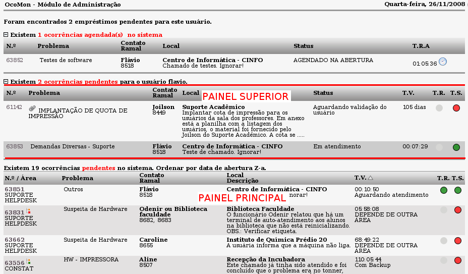

Status (Admin -> Ocorrências -> Status)
No OcoMon, um dos principais controles sobre o ciclo de vida dos chamados no sistema é o
status. Através do Status de ocorrência é possível entender possíveis pendências ou encaminhamentos necessários para sua conclusão.
O status de um chamado no sistema também define em que área da tela principal de chamados ele ficará visível e, além disso, também é responsável pelo controle de tempos válidos a fim de consolidar o relatório de SLAs sobre os chamados concluídos.
Ao cadastrar um status é preciso ter definido as seguintes questões:
Nível de dependência para chamados nesse status: o OcoMon associa cada status a um nível de dependência, dessa forma é possível saber se houve situações onde a conclusão do chamado dependeu de ação de alguma outra entidade que não a própria área de atendimento para o qual foi aberto.
Existem 4 níveis de dependência no sistema:
- Dependência ao usuário: o tempo em que o chamado esteve nesse tipo de dependência é descontado do tempo total de vida do chamado. Esse tipo de situação é útil quando existe algum impedimento por parte do usuário solicitante impossibilitando a conclusão da ocorrência por parte da equipe técnica.
- Dependência de terceiros: o sistema contabiliza o tempo em que os chamados permanecem pendentes em função de terceiros, no entanto esse tempo não é descontado do tempo total do chamado visto que não é da responsabilidade do usuário solicitante.
- Fora de dependência: o tempo em que o chamado esteve com esse tipo de dependência também é descontado do tempo geral do chamado.
- Independente: o tempo em que o chamado estiver com esse nível de dependência não será contabilizado pelo sistema na consolidação do relatório de SLAs.
Painel de exibição para chamados nesse status: cada status cadastrado no sistema é associado a um painel de exibição, isso indica em que área de tela principal de chamados o mesmo será exibido ou até mesmo oculto no sistema.
Os possível painéis são:
- Superior: chamados com status associados ao painel superior são visualizados apenas por seus operadores na tela principal do sistema, não sendo visíveis aos demais operadores na tela principal (outros operadores podem visualizar o chamado através de consulta no sistema). Ex: chamados em atendimento são associados ao painel superior pois não precisar aparecer na fila normal de atendimento.
- Principal: é a área onde é exibida toda a fila de ocorrências pendentes de alguma ação por parte da área de atendimento para qual foram direcionadas. Ex: chamados aguardando atendimento são associados ao painel principal pois precisam ser visualizados por todos os membros da área de atendimento para o qual foram direcionados.
- Oculto: chamados com status associado ao painel oculto não são visíveis na tela principal de chamados do sistema. Esse painel é indicado para chamados encerrados, cancelados e afins.

Tela ilustrando o posicionamento de cada painel no sistema - versão 2.0rc3